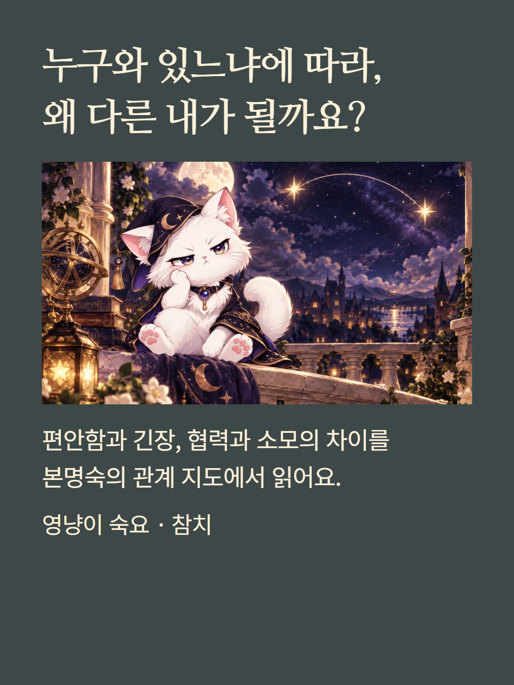
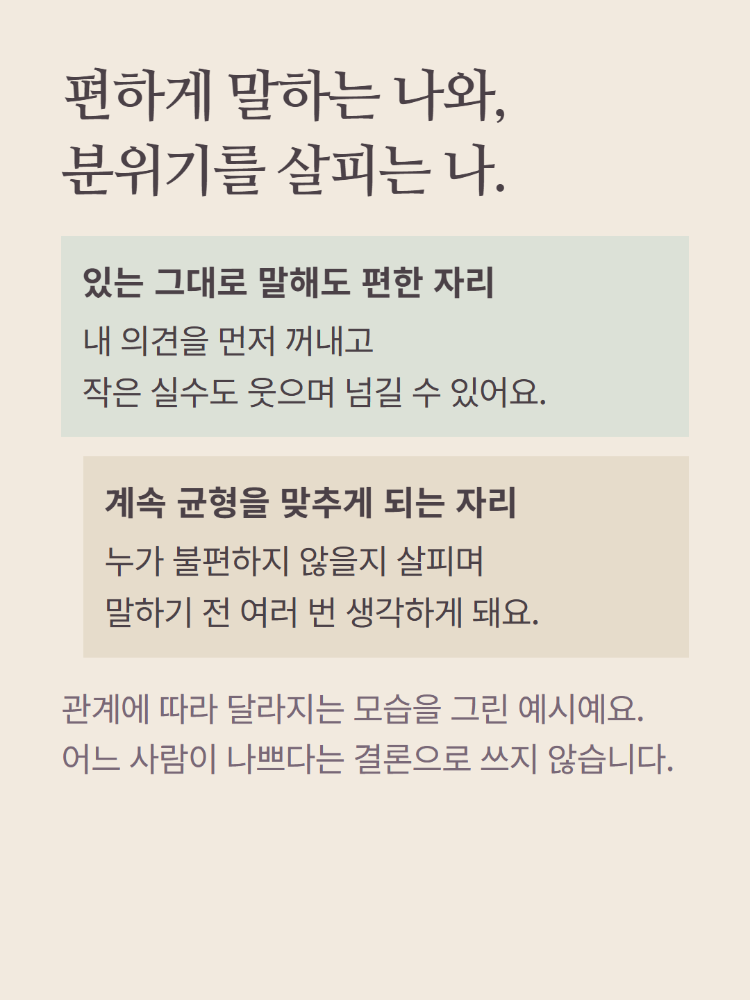
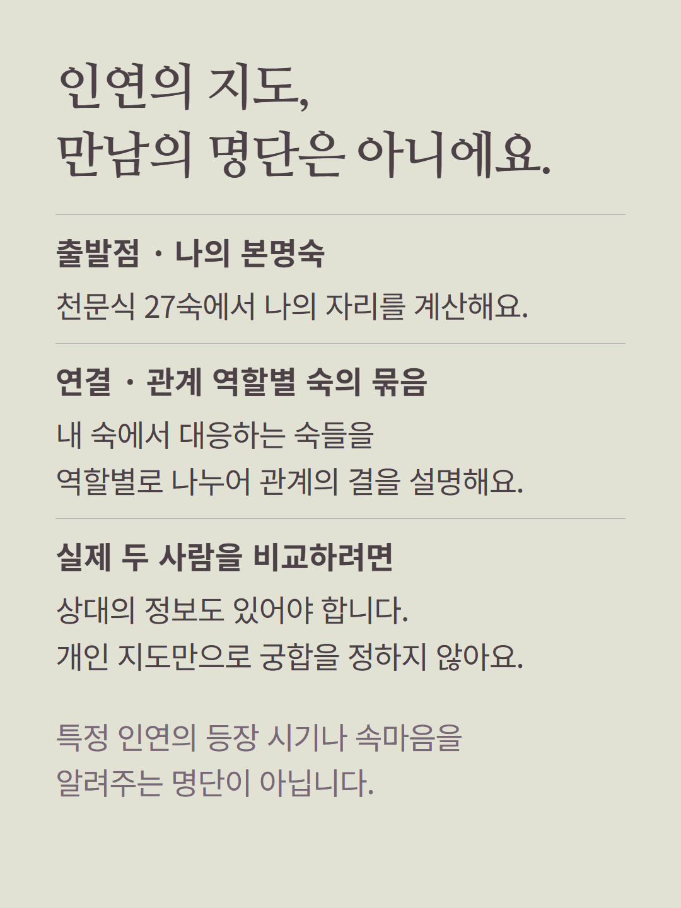
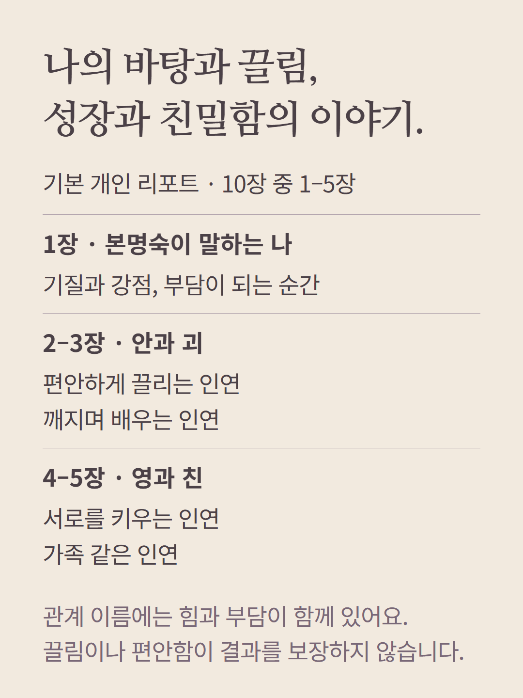
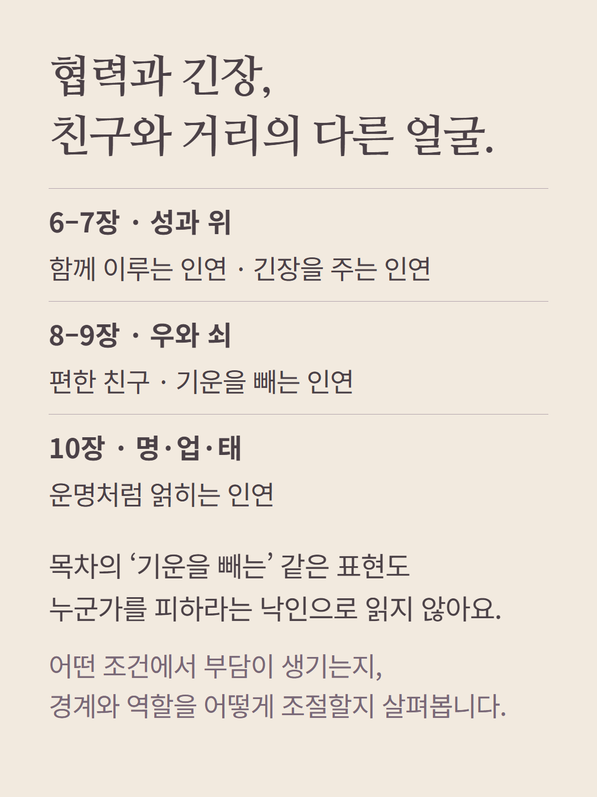
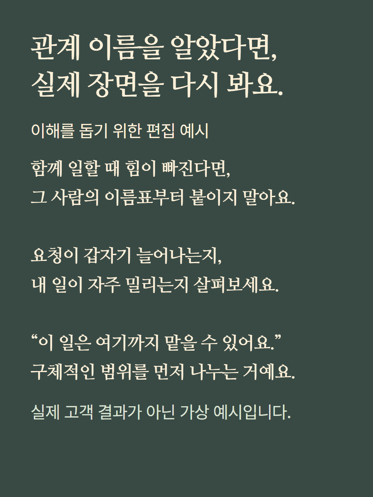
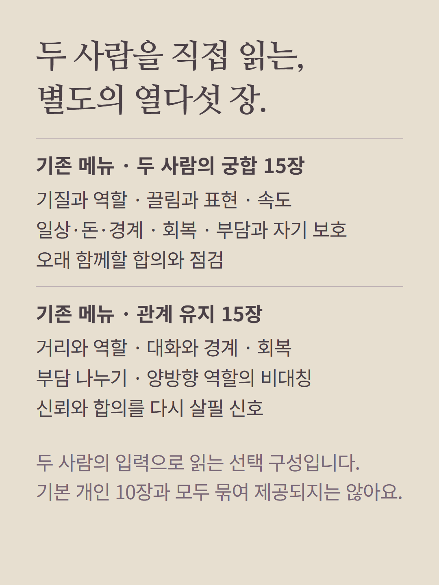
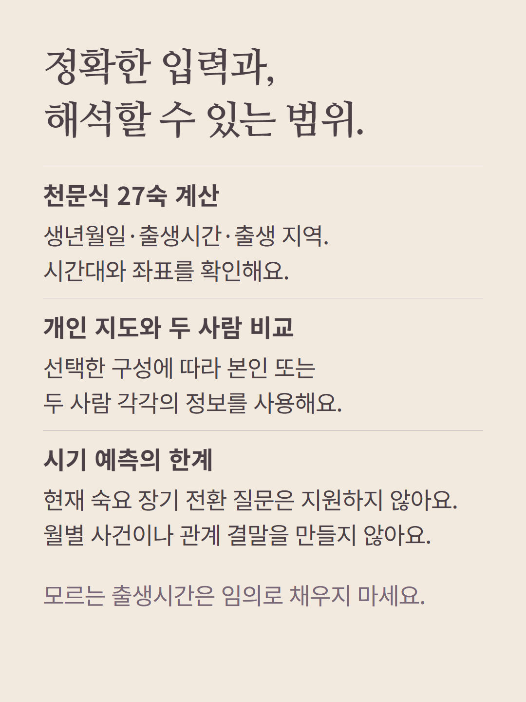
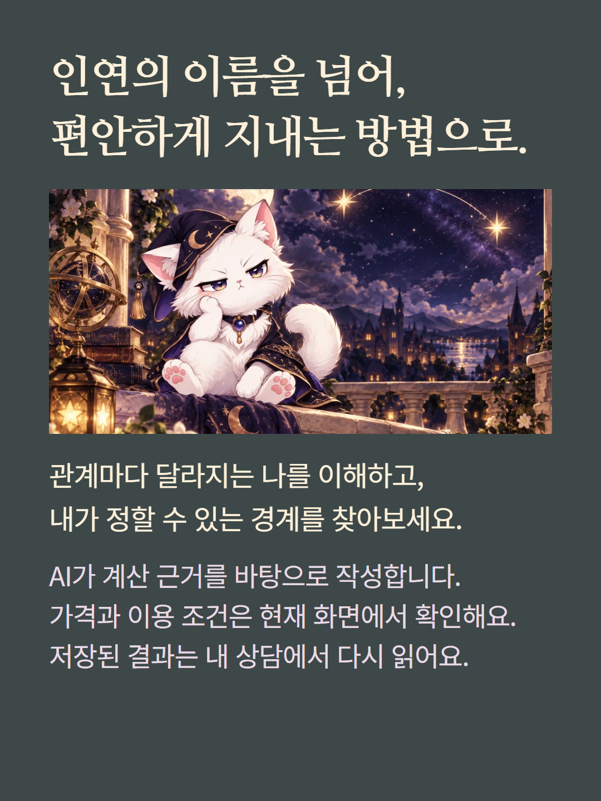

숙요 참치의 기본 개인 리포트는 본명숙과 인연 유형을 읽는 10장입니다. 안·괴·영·친·성·위·우·쇠·명·업·태는 관계를 설명하는 전통적 이름이며 사람을 좋고 나쁜 등급으로 분류하지 않습니다. 개인 지도는 본인의 숙에서 대응하는 숙들을 묶은 것으로 특정 상대의 마음이나 실제 궁합을 관찰한 결과가 아닙니다. 기존 메뉴의 두 사람 궁합·관계 유지는 각각 15장으로 별도 선택하고 두 사람 정보를 사용합니다. 현재 숙요 장기 시기 전환은 질문 추천에서 지원하지 않습니다. 천문식 계산에 출생시간·지역·시간대가 필요합니다. 예시는 가상 편집이고 AI 작성 리포트입니다. 가격·이용 조건은 기존 화면에서 확인하세요.